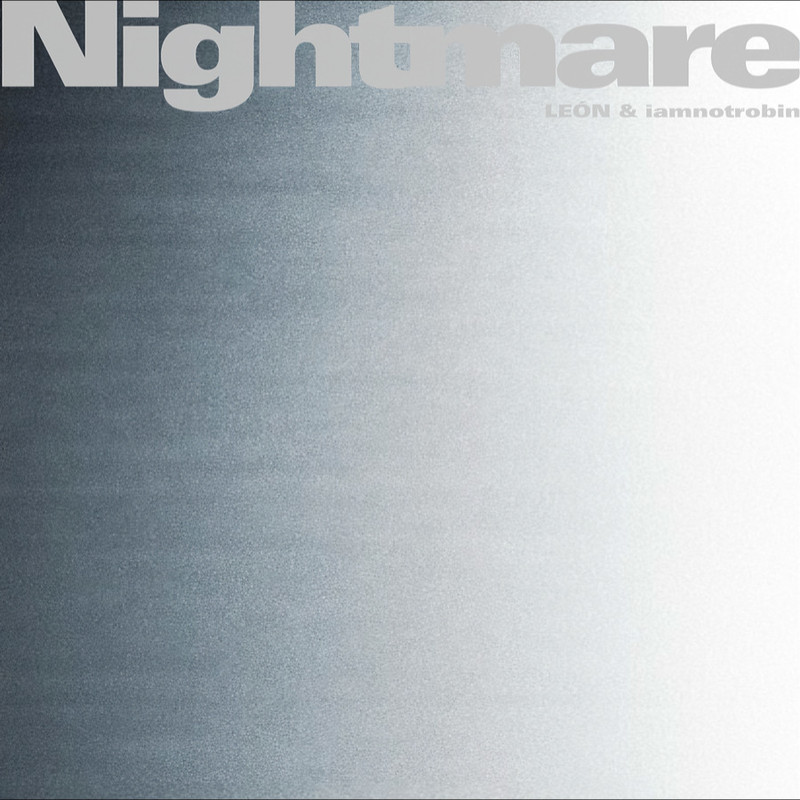

Listen on QQ Music ↗LEON/iamnotrobin
Nightmare (Explicit)
About the release
当你久久凝视镜中的自己，灵魂便与躯体分离，你不再是你，镜中的你变为了你的Nightmare Ta尝试接触你、试探你… 不要感到恐惧，当你的恐惧被放大，Ta便会逐渐吞噬你、取代你… （剩下的请自行解读或者来问我） Welcome to the OMNISCIENCE world
Track List (1)
- 01Nightmare2:57
Album information · QQ Music ↗